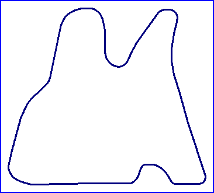

Concepción
Autodromo de San Pedro

| Length | 0.684 Miles // 1.100 km |
| Direction | |
Contact Information |
|
| Address | Autodromo de San Pedro Los Batros San Pedro de la Paz Concepción VIII Region |
| Telephone | |
| Website | http://www.clubcadec.cjb.net |
racingcircuits.net - Lasted Updated: 06 September 2005 21:35:36 GMT Daylight Time